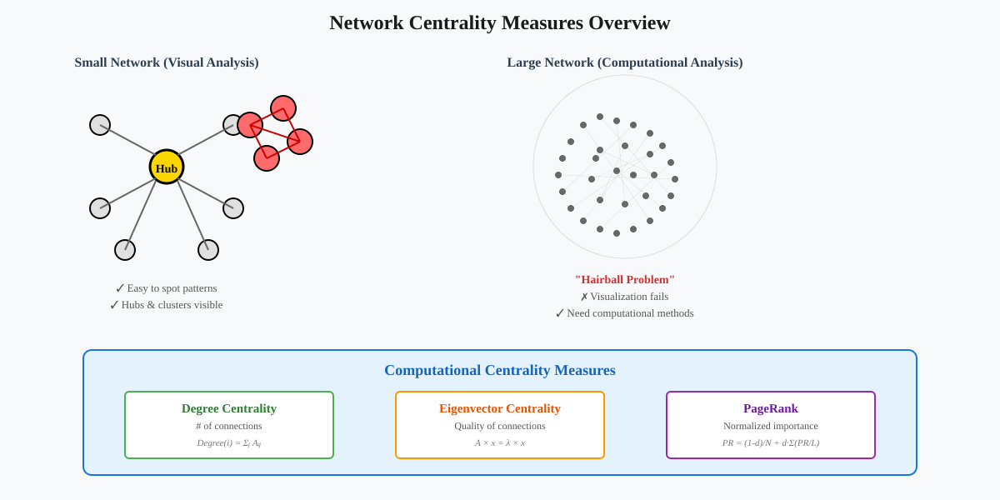
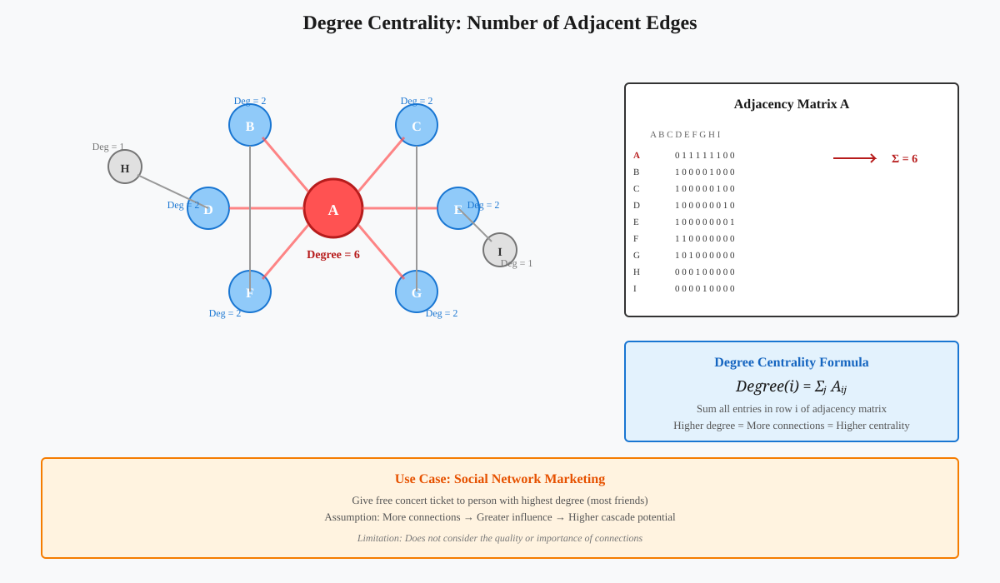
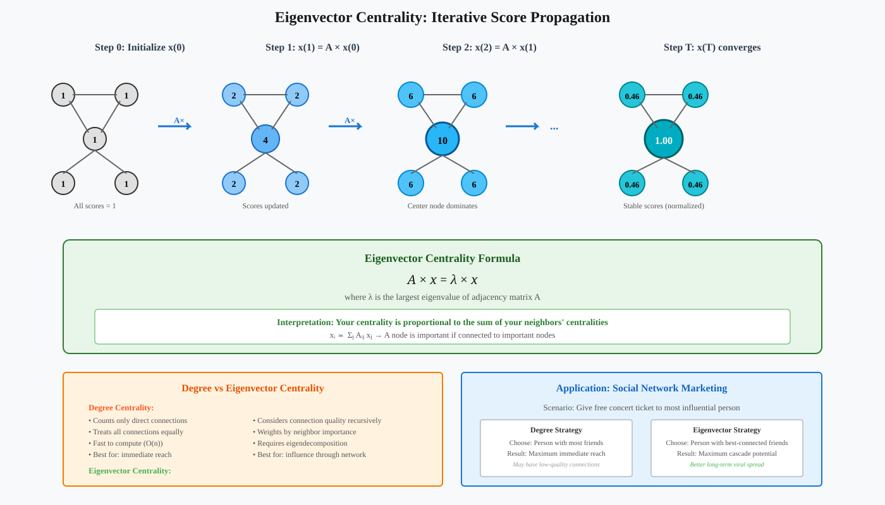
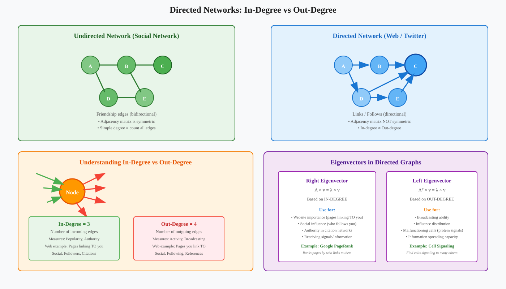
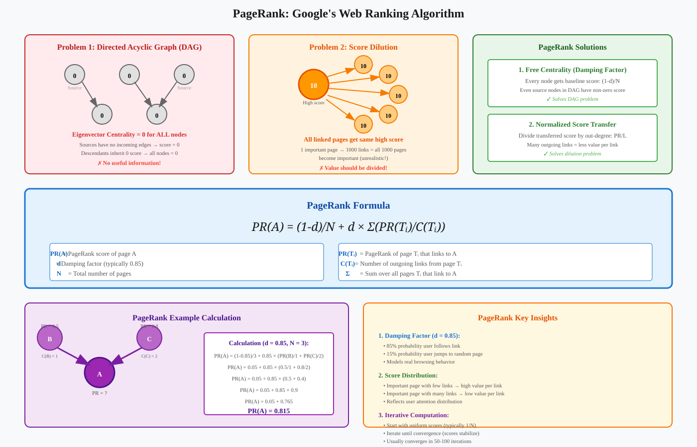

Network Centrality Measures
📑 Quick Navigation
- Introduction
- Understanding Network Centrality
- Degree Centrality
- Eigenvector Centrality
- Directed Networks and PageRank
- Implementation Examples
- Comparison Table
- References & Further Reading
Introduction
Network centrality measures are mathematical approaches to quantify the importance or influence of nodes within a network. When networks grow to hundreds or thousands of nodes, visualization becomes impractical, and computational methods based on adjacency matrices become essential for identifying key nodes and network properties.

Key Applications:
- Social Networks: Identifying influential individuals for marketing campaigns
- Web Analysis: Ranking websites by importance (Google's PageRank)
- Biological Networks: Finding critical proteins or genes in cellular pathways
- Infrastructure Networks: Detecting critical nodes in transportation or communication systems
Understanding Network Centrality
What is Centrality?
Centrality measures quantify the importance of a node based on its position and connections within a network. The appropriate centrality measure depends on the application context and the type of network being analyzed.
Network Representation:
Networks are represented using adjacency matrices, where:
- Nodes: Represent entities (people, websites, proteins, etc.)
- Edges: Represent relationships or connections
- Adjacency Matrix A: Contains 1 if nodes i and j are connected, 0 otherwise
Why Computational Approaches?
- Scalability: Human visual pattern recognition fails with large networks
- Objectivity: Mathematical measures provide consistent, reproducible results
- Efficiency: Matrix operations enable fast computation on large datasets
- Precision: Quantitative scores allow ranking and comparison
Degree Centrality
Definition
Degree centrality is the simplest measure of node importance, defined as the number of edges connected to a node.
Degree(i) = Number of edges adjacent to node i

Computing Degree Centrality
Using the Adjacency Matrix:
The degree of node i can be computed by summing all entries in row i of the adjacency matrix A:
Degree(i) = Σⱼ Aᵢⱼ
Where:
- Aᵢⱼ = 1 if nodes i and j are connected
- Aᵢⱼ = 0 otherwise
- The sum ranges over all nodes j in the network
Application Example: Social Media Marketing
Scenario: Promoting a concert on Facebook by giving a free ticket to the most influential person.
Strategy:
- Identify the node with the highest degree (most friends)
- Assumption: This person can trigger a cascade of ticket purchases through their network
- Simple but effective for immediate reach maximization
Limitations:
- Quality vs Quantity: High degree doesn't guarantee high-quality connections
- Network Structure: Ignores the importance of neighbors
- Cascade Potential: May not optimize for viral spread through multiple hops
Eigenvector Centrality
Concept
Eigenvector centrality refines degree centrality by considering not just the number of connections, but also the importance of those connections. A node's centrality is proportional to the sum of the centralities of its neighbors.
xᵢ ∝ Σⱼ Aᵢⱼ xⱼ

Mathematical Foundation
Eigenvector Definition:
For a matrix A, vector v is an eigenvector if:
A × v = λ × v
Where:
- v = eigenvector (doesn't change direction under transformation)
- λ = eigenvalue (scaling factor)
- A × v only scales v, doesn't rotate it
The Power Iteration Method
Step 1: Initialize Scores
Start with uniform scores for all nodes:
x(0) = [1, 1, 1, ..., 1]ᵀ
Step 2: Iterate
Repeatedly multiply by the adjacency matrix:
x(1) = A × x(0)
x(2) = A × x(1) = A² × x(0)
x(3) = A × x(2) = A³ × x(0)
...
x(T) = Aᵀ × x(0)
Step 3: Convergence
After T iterations, the score vector stabilizes:
x(T) ≈ x(T-1)
Mathematical Result:
The final score vector x(T) is proportional to the eigenvector corresponding to the largest eigenvalue of A:
A × x = λₘₐₓ × x
Why This Works
Recursive Quality:
- Your centrality depends on your neighbors' centralities
- Their centralities depend on their neighbors' centralities
- This recursion naturally leads to the eigenvector equation
Efficient Computation:
- Eigenvectors can be calculated efficiently even for very large matrices
- Applicable to networks with billions of nodes (e.g., Facebook)
Quality Over Quantity:
Eigenvector centrality may assign higher scores to nodes with fewer but better-connected neighbors compared to nodes with many poorly-connected neighbors.
Practical Implementation
import numpy as np
from scipy.sparse.linalg import eigs
def eigenvector_centrality(adjacency_matrix):
"""
Calculate eigenvector centrality using the power iteration method.
Parameters:
adjacency_matrix: numpy array or sparse matrix
Returns:
centrality_scores: array of centrality values for each node
"""
# Find the largest eigenvalue and its eigenvector
eigenvalues, eigenvectors = eigs(adjacency_matrix, k=1, which='LM')
# Extract the principal eigenvector
centrality = np.abs(eigenvectors[:, 0])
# Normalize scores
centrality = centrality / np.max(centrality)
return centrality
Directed Networks and PageRank
Directed vs Undirected Networks

Undirected Networks:
- Edges have no direction (e.g., friendship on Facebook)
- Adjacency matrix is symmetric: Aᵢⱼ = Aⱼᵢ
- Degree centrality: count all adjacent edges
Directed Networks:
- Edges have direction (e.g., web links, Twitter follows)
- Adjacency matrix is not symmetric
- Two types of degree:
- In-degree: Number of incoming edges
- Out-degree: Number of outgoing edges
Eigenvectors in Directed Graphs
For directed graphs, the adjacency matrix has distinct left and right eigenvectors:
Right Eigenvector:
- Captures centrality based on in-degree
- Used for: Website importance, influence reception
Left Eigenvector:
- Captures centrality based on out-degree
- Used for: Signal broadcasting, influence distribution
Example Applications:
- Website Ranking: Use right eigenvector (pages linking TO you)
- Cell Signaling: Use left eigenvector (cell signaling TO others)
Problems with Eigenvector Centrality
Problem 1: Directed Acyclic Graphs (DAGs)
In DAGs, source nodes have no incoming edges:
- Source nodes get centrality score of 0
- All descendants also get score of 0
- Result: All nodes have centrality = 0 (no useful information)
Problem 2: Score Dilution
A high-importance node linking to thousands of other nodes:
- Gives high scores to all linked nodes equally
- Unrealistic for web analysis
- Users don't explore all links from a page
PageRank: Google's Solution

Key Improvements:
1. Free Centrality (Damping Factor)
Every node receives baseline centrality regardless of connections:
PR(i) = (1-d)/N + d × Σⱼ PR(j)/L(j)
Where:
- d = damping factor (typically 0.85)
- N = total number of nodes
- L(j) = number of outgoing links from node j
- The (1-d)/N term solves the DAG problem
2. Normalized Score Transfer
Divide transferred score by the number of outgoing links:
Transfer from j to i = PR(j) / L(j)
Benefits:
- Addresses score dilution
- Important sites with few outgoing links transfer more value
- Reflects realistic user behavior (selective link following)
PageRank Formula
Complete PageRank Equation:
PR(A) = (1-d)/N + d × (PR(T₁)/C(T₁) + PR(T₂)/C(T₂) + ... + PR(Tₙ)/C(Tₙ))
Where:
- PR(A) = PageRank of page A
- d = damping factor (probability of following links vs random jump)
- N = total number of pages
- T₁, T₂, ..., Tₙ = pages that link to page A
- C(Tᵢ) = number of outgoing links from page Tᵢ
Damping Factor Interpretation:
- Represents probability a user continues clicking links vs jumping to random page
- Typical value: d = 0.85 (85% chance of following links)
- Models real user behavior in web browsing
PageRank vs Eigenvector Centrality
Similarities:
- Both use iterative score propagation
- Both based on network adjacency structure
- Both converge to stable scores
Key Differences:
- Baseline Score: PageRank adds free centrality, eigenvector centrality doesn't
- Score Transfer: PageRank normalizes by out-degree, eigenvector centrality doesn't
- DAG Handling: PageRank works on DAGs, eigenvector centrality fails
- Application: PageRank optimized for web graphs, eigenvector for social networks
Implementation Examples
Example 1: Computing Degree Centrality
import numpy as np
import networkx as nx
import matplotlib.pyplot as plt
# Create sample network
G = nx.Graph()
G.add_edges_from([(1,2), (1,3), (1,4), (2,3), (3,4), (3,5)])
# Get adjacency matrix
A = nx.adjacency_matrix(G).todense()
# Compute degree centrality
degrees = np.sum(A, axis=1).A1
# Display results
for node, degree in enumerate(degrees, 1):
print(f"Node {node}: Degree = {degree}")
# Visualize
pos = nx.spring_layout(G)
node_sizes = [300 * degree for degree in degrees]
nx.draw(G, pos, node_size=node_sizes, with_labels=True,
node_color='lightblue', font_size=16, font_weight='bold')
plt.title("Network with Node Sizes Proportional to Degree Centrality")
plt.show()
Example 2: Eigenvector Centrality with NetworkX
import networkx as nx
# Create network
G = nx.karate_club_graph()
# Calculate eigenvector centrality
centrality = nx.eigenvector_centrality(G, max_iter=1000)
# Sort nodes by centrality
sorted_nodes = sorted(centrality.items(), key=lambda x: x[1], reverse=True)
# Display top 5 most central nodes
print("Top 5 Most Central Nodes:")
for node, score in sorted_nodes[:5]:
print(f"Node {node}: Centrality = {score:.4f}")
# Visualize
pos = nx.spring_layout(G)
node_colors = [centrality[node] for node in G.nodes()]
nx.draw(G, pos, node_color=node_colors, cmap=plt.cm.Reds,
with_labels=True, node_size=300)
plt.title("Eigenvector Centrality - Zachary's Karate Club")
plt.colorbar(plt.cm.ScalarMappable(cmap=plt.cm.Reds))
plt.show()
Example 3: PageRank Implementation
import networkx as nx
# Create directed graph (web network)
G = nx.DiGraph()
G.add_edges_from([
('A', 'B'), ('A', 'C'), ('B', 'C'),
('C', 'A'), ('D', 'C'), ('D', 'B'),
('E', 'D'), ('E', 'B'), ('E', 'F'),
('F', 'E'), ('F', 'B')
])
# Calculate PageRank
pagerank = nx.pagerank(G, alpha=0.85)
# Display results
print("PageRank Scores:")
for page, score in sorted(pagerank.items(), key=lambda x: x[1], reverse=True):
print(f"Page {page}: {score:.4f}")
# Visualize
pos = nx.spring_layout(G)
node_sizes = [3000 * pagerank[node] for node in G.nodes()]
nx.draw(G, pos, node_size=node_sizes, with_labels=True,
node_color='lightgreen', arrows=True, arrowsize=20)
plt.title("PageRank on Directed Web Graph")
plt.show()
🔗 Google Colab Notebooks

Try these interactive notebooks:
- NetworkX Centrality Tutorial: Comprehensive guide to all centrality measures
- PageRank from Scratch: Implement PageRank algorithm step-by-step
- Social Network Analysis: Analyze real-world social networks
Comparison Table
| Centrality Measure | Network Type | Computation | Considers | Best For | Limitations |
|---|---|---|---|---|---|
| Degree Centrality | Undirected | Simple (row sum) | Direct connections only | Immediate reach, local influence | Ignores connection quality |
| Eigenvector Centrality | Undirected | Eigendecomposition | Connection quality recursively | Social networks, influence assessment | Fails on DAGs, no normalization |
| PageRank | Directed | Iterative power method | Quality + normalization + damping | Web ranking, directed networks | More complex computation |
| In-Degree | Directed | Count incoming edges | Popularity, authority | Identifying hubs | Doesn't consider link quality |
| Out-Degree | Directed | Count outgoing edges | Activity, broadcasting | Finding active spreaders | Easy to manipulate |
When to Use Each Measure
Use Degree Centrality when:
- You need quick, simple analysis
- Network is small to medium sized
- Immediate connections are most important
- Computational resources are limited
Use Eigenvector Centrality when:
- Network is undirected (social networks)
- Connection quality matters
- You want recursive importance assessment
- Network has no directed acyclic structure
Use PageRank when:
- Network is directed (web, citation networks)
- Graph may contain DAGs
- Score dilution is a concern
- You need robust ranking (like Google)
References & Further Reading
📚 Academic Papers
- Bonacich, P. (1987). "Power and Centrality: A Family of Measures." American Journal of Sociology, 92(5), 1170-1182.
-
Foundational paper on eigenvector centrality
-
Page, L., Brin, S., Motwani, R., & Winograd, T. (1999). "The PageRank Citation Ranking: Bringing Order to the Web." Stanford InfoLab Technical Report.
-
Original PageRank algorithm description
-
Newman, M. E. J. (2010). "Networks: An Introduction." Oxford University Press.
-
Comprehensive textbook on network science
-
Fortunato, S., & Hric, D. (2016). "Community detection in networks: A user guide." Physics Reports, 659, 1-44.
- Modern review of network analysis methods
🛠️ Tools & Libraries
- NetworkX Documentation: https://networkx.org/
-
Python library for network analysis
-
igraph: https://igraph.org/
- Fast network analysis library for Python, R, and C
🎓 Online Courses & Tutorials
- Stanford CS224W: "Machine Learning with Graphs"
-
Graph Neural Networks: Hugging Face Course
- Modern deep learning approaches to graph analysis
📊 Datasets for Practice
- SNAP Stanford: http://snap.stanford.edu/data/
- Network Repository: http://networkrepository.com/
Document Version: 1.0
Last Updated: October 2025
Author: Network Science Documentation Team
License: MIT License